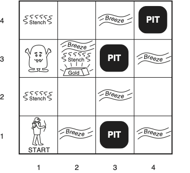
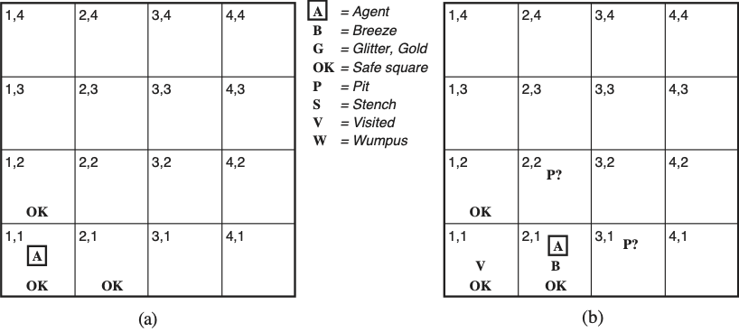
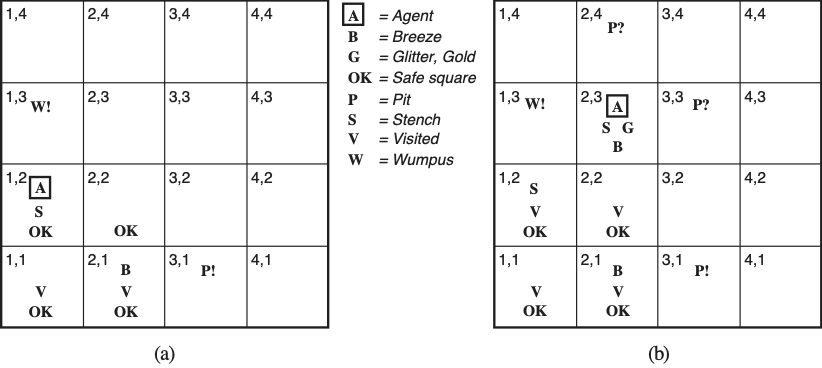

World Models#
For each problem we can define a number of world models each representing every possible state (configuration) of the environment that the agent may be in.
Wumpus World#
We will use a very simple world known in the literature as the Wumpus world (a cave) shown below.
 Wumpus World. It was inspired by a video game Hunt the Wumpus by Gregory Yob in 1973. The Wumpus world is a cave which has 4/4 rooms connected with passageways. So there are total 16 rooms which are connected with each other. We have a agent who will move in this world. The cave has a room with a beast which is called Wumpus, who eats anyone who enters the room. The Wumpus can be shot by the agent, but the agent has a single arrow. There are pit rooms which are bottomless, and if agent falls in such pits, then he will be stuck there forever. The agent’s goal is to find the gold and climb out of the cave without falling into pits or eaten by Wumpus. The agent will get a reward if he comes out with gold, and he will get a penalty if eaten by Wumpus or falls in the pit.
The Performance Environment Actuators and Sensors (PEAS) description is summarized in the table.
Attribute |
Description |
|---|---|
Environment |
Locations of gold and wumpus are uniformly random while any cell other than the starting cell can be a pit with probability of 0.2. One instantiation of the environment that is going to be fixed throughout the problem solving exercise is shown in the figure above. The agent always start at [1,1] facing to the right. |
Performance |
+1000 points for picking up the gold. This is the goal of the agent. |
−1000 points for dying. Entering a square containing a pit or a live Wumpus monster. |
|
−1 point for each action taken so that the agent should avoid performing unnecessary actions. |
|
−10 points for using the arrow trying to kill the Wumpus. |
|
Actions |
Turn 90◦ left or right |
Forward (walk one square) in the current direction |
|
Grab an object in this square |
|
Shoot the single arrow in the current direction, which flies in a straight line until it hits a wall or the Wumpus |
|
Climb out of the cave - this is possible only in the starting location [1,1] |
|
Sensors |
Stench when the Wumpus is in an adjacent square — directly, not diagonally |
Breeze when an adjacent square has a pit |
|
Glitter when the agent perceives the glitter of the gold in the current square |
|
Bump when the agent walks into an enclosing wall (and then the action had no effect) |
|
Scream when the arrow hits the Wumpus, killing it. |
The environment is:
Static: It is static as Wumpus and Pits are not moving.
Discrete: The states are discrete.
Partially observable: The Wumpus world is partially observable because the agent can only perceive the close environment such as an adjacent room.
Sequential: The order is important, so it is sequential.
But why this problem requires reasoning? Simply put, the agent needs to infer the state of adjacent cells from its perception subsystem in the current cell and the knowledge of the rules of the wumpus world. These inferences will help the agent to only move to an adjacent cell when it has determined that the cell is OK for it move into.
 Agent A moving in the environment infering the contents of adjacent cells. (a) Initial environment after percept [Stench, Breeze, Glitter, Bump, Scream]=[None, None, None, None, None]. (b) After one move with percept [Stench, Breeze, Glitter, Bump, Scream]=[None, Breeze, None, None, None].
Environment State |
Description |
|---|---|
(a) |
Agent A starts at [1, 1] facing right. The background knowledge β assures agent A that he is at [1, 1] and that it is OK = certainly not deadly. |
Agent A gets the percept [Stench, Breeze, Glitter, Bump, Scream]=[None, None, None, None, None]. |
|
Agent A infers from this percept and β that its both neighboring squares [1, 2] and [2, 1] are also OK: “If there was a Pit (Wumpus), then here would be Breeze (Smell) — but isn’t, so… ”. The KB enables agent A to discover certainties about parts of its environment — even without visiting those parts. |
|
(b) |
Agent A is cautious, and will only move to OK squares. Agent A walks into [2, 1], because it is OK, and in the direction where agent A is facing, so it is cheaper than the other choice [1, 2]. Agent A also marks [1, 1] Visited. |
Agent A perceives [Stench, Breeze, Glitter, Bump, Scream]=[None, Breeze, None, None, None]. Agent A infers: “At least one of the adjacent squares [1, 1], [2, 2] and [3, 1] must contain a Pit. There is no Pit in [1, 1] by my background knowledge β. Hence [2, 2] or [3, 1] or both must contain a Pit.” Hence agent A cannot be certain of either [2, 2] or [3, 1], so [2, 1] is a dead-end for a cautious agent like A. |
 Agent moving in the environment infering the contents of adjacent cells. (a) After the 3rd move and percept [Stench, Breeze, Glitter, Bump, Scream]=[Stench, None, None, None, None]. (b) After the 5th move with percept [Stench, Breeze, Glitter, Bump, Scream]=[Stench, Breeze, Glitter, None, None].
Environment State |
Description |
|---|---|
(a) |
Agent A has turned back from the dead end [2, 1] and walked to examine the other OK choice [1, 2] instead. |
Agent A perceives [Stench, Breeze, Glitter, Bump, Scream]=[Stench, None, None, None, None]. |
|
Agent A infers using also earlier percepts: “The Wumpus is in an adjacent square. It is not in [1, 1]. It is not in [2, 2] either, because then I would have sensed a Stench in [2, 1]. Hence it is in [1, 3].” |
|
Agent A infers using also earlier inferences: “There is no Breeze here, so there is no Pit in any adjacent square. In particular, there is no Pit in [2, 2] after all. Hence there is a Pit in [3, 1].” |
|
Agent A finally infers: “[2, 2] is OK after all — now it is certain that it has neither a Pit nor the Wumpus.” |
|
(b) |
Agent A walks to the only unvisited OK choice [2, 2]. There is no Breeze here, and since the square of the Wumpus is now known too, [2, 3] and [3, 2] are OK too. |
Agent A walks into [2, 3] and senses the Glitter there, so it grabs the gold and succeeds. |
Logical Inference#
A more general reasoning case#
The wumpus world despite its triviality, contains some deeper abstractions that are worth summarizing.
Logical inference can be done via an internal representation that are sentences - their syntax and semantics we will examined next.
Sentences may be expressed in natural language. Together with the perception and probabilistic reasoning subsystems that can generate symbols associated with a task, the natural language can be grounded and inferences can be drawn in a ‘soft’ or probabilistic way at the symbolic level.
To return to the backpack problem, for the sentence \(\beta\) that declares that the backpack was abandoned, we need to entail a sentence \(\alpha\) (and we denote it as \(\alpha \models \beta\)) that the backpack was handed over to \(\mathtt{nobody}\) and therefore justify an action to sound the security alarm. Note the direction in notation: \(\alpha\) is a stronger assertion that \(\beta\).
The specific world model \(m\) is a mathematical abstraction that fixes as TRUE or FALSE each of the sentences it contains and as you understand, depending on the sentences, it may or may not correspond to reality. We denote the set of models that satisfy sentence \(\alpha\) as \(M(\alpha)\). We also say that \(m\) is a model of \(\alpha\). Now that we have defined the world model we can go back to the definition of entailment in the earlier example and write:
Model-Checking Algorithm#
The reasoning algorithm regarding the possible state of the environment in surrounding cells that the agent performed informally above, is called model checking because it enumerates all possible models to check that a sentence \(a\) is supported by the KB i.e. \(M(KB) ⊆ M(\alpha)\).
 Possible Models in the presence of pits in cells [1,2],[2,2] and [3,1]. There are \(2^3=8\) possible models. The KB when the percepts indicate nothing in cell [1,1] and a breeze in [2,1] is shown as a solid line. With dotted line we show all models of \(a_1=\text{"not have a pit in [1,2]"}\) sentence.
Possible Models in the presence of pits in cells [1,2],[2,2] and [3,1]. There are \(2^3=8\) possible models. The KB when the percepts indicate nothing in cell [1,1] and a breeze in [2,1] is shown as a solid line. With dotted line we show all models of \(a_1=\text{"not have a pit in [1,2]"}\) sentence.
 Same situation as the figure above but we indicate with dot circle a different sentence \(a_2\). What is this sentence?
Same situation as the figure above but we indicate with dot circle a different sentence \(a_2\). What is this sentence?
Propositional Logic Syntax#
The PL syntax defines the allowable sentences that can be complex. Each atomic sentence consists of a single (propositional) symbol and the fixed symbols TRUE & FALSE. In BNF the atomic sentences or formulas are also called terminal elements. Complex sentences can be constructed from sentences using logical operators (connectives that connect two or more sentences). In evaluating complex sentences the operator precedence shown in the figure below must be followed.
 BNF grammar of propositional logic
BNF grammar of propositional logic
Out of all the operators, two are worthy of further explanation.
imply (⇒) operator: the left hand side is the premise and the right hand side is the implication or conclusion or consequent. This is an operator of key importance known as rule. Its an if-then statement.
if and only if (⇔) operator: its expressing an equivalence (≡) or a biconditional.
Propositional Logic Semantics#
The semantics for propositional logic specify how to compute the value of any sentence given a model. To do so we use the following truth table.
 Truth tables for three primary and five derived logical operators. Note the presence of the XOR connective.
Truth tables for three primary and five derived logical operators. Note the presence of the XOR connective.
Given a world model in the KB
a sentence can be assigned a truth value (FALSE/TRUE) using the semantics above. For example the sentence,
Inference Example#
Using the operators and their semantics we can now construct an KB as an example for the wumpus world. We will use the following symbols to describe atomic and complex sentences in this world.
Symbols |
Description |
|---|---|
\(P_{x,y}\) |
Pit in cel [x,y] |
\(W_{x,y}\) |
Wumpus (dead or alive) in cel [x,y] |
\(B_{x,y}\) |
Perception of a breeze while in cel [x,y] |
\(S_{x,y}\) |
Perception of a stench while in cel [x,y] |
Using these symbols we can convert the natural language assertions into logical sentences and populate the KB. The sentences \(R_1\) and \(R_2/R_3\) are general rules of the wumpus world. \(R_4\) and \(R_5\) are specific to the specific world instance and moves of the agent.
Sentence |
Description |
KB |
|---|---|---|
\(R_1\) |
There is no pit in cel [1,1] |
\(\neg P_{1,1}\) |
\(R_2\) |
The cell [1,1] is breezy if and only if there is a pit in the neighboring cell. |
\(B_{1,1} ⇔ (P_{1,2} \lor P_{2,1})\) |
\(R_3\) |
The cell [2,1] is breezy if and only if there is a pit in the neighboring cell. |
\(B_{2,1} ⇔ (P_{1,1} \lor P_{2,2} \lor P_{3,1})\) |
\(R_4\) |
Agent while in cell [1,1] perceives [Stench, Breeze, Glitter, Bump, Scream]=[None, None, None, None, None] |
\(\neg B_{1,1}\) |
\(R_5\) |
Agent while in cell [2,1] perceives [Stench, Breeze, Glitter, Bump, Scream]=[None, Breeze, None, None, None] |
\(B_{2,1}\) |
As the agent moves, it uses the KB to decide whether a sentence is entailed by the the KB or not. For example can we infer that there is no pit at cell [1,2] ? The sentence of interest is \( \alpha = \neg P_{1,2}\) and we need to prove that:
To answer such question we will use the model checking algorithm outlined in this chapter: enumerate all models and check that \(\alpha\) is true for in every model where the KB is true. We construct the truth table that involves the symbols and sentences present in the KB:

As described in the figure caption, 3 models out of the \(2^7=128\) models make the KB true and in these rows the \(P_{1,2}\) is false.
Although the model checking approach was instructive, there is an issue with its complexity. Notice that if there are \(n\) symbols in the KB there will be \(2^n\) models, the time complexity is \(O(2^n)\).
The symbolic representation together with the explosive increase in the number of sentences in the KB as time goes by, cant scale. Another approach to do entailment, potentially more efficient, is theorem proving where we are applying inference rules directly to the sentences of the KB to construct a proof of the desired sentence/query. Even better, we can invest in new representations as described in the PDDL chapter to develop planning approaches that combine search and logic and do not suffer necessarily from the combinatorial explosion problem.